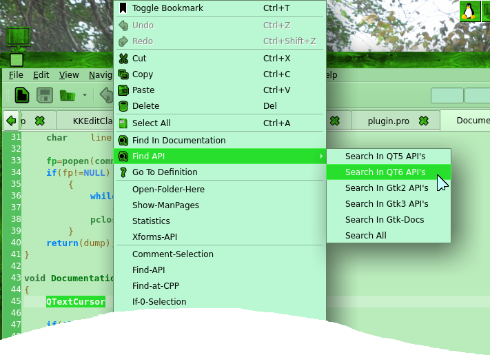
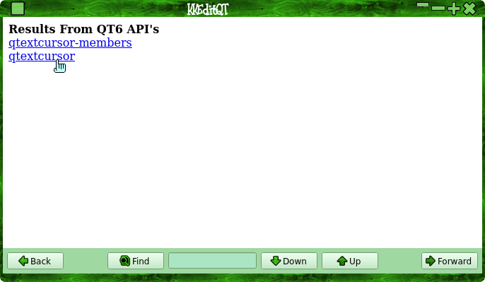
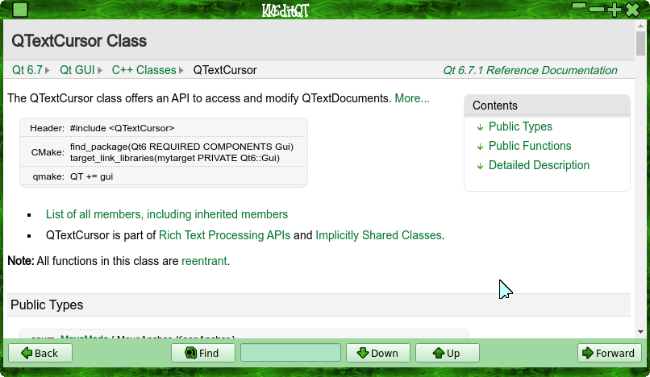
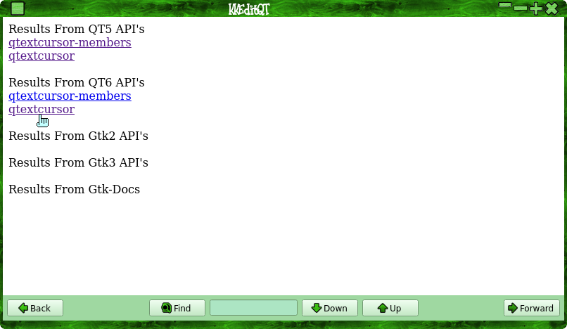

Adds a menu to allow you to search for selected text with various API actions.
The API menu is available via the 'Navigation' menu or the context menu, if there is no selected text the 'Find API' menu will be greyed out in the 'Navigation' menu and not shown in the conext menu.
Select API search:

Then select in the doc viewer:


Easy Peasy!
You can also do a "Search All" that will look for API's using all search actions:

You can also set a custom command from the plugin settings dialog like so:
This command will be run asynchronously after replacing "%p" with the currently selected text, no output will be shown in the docviewer window..
If you don't want a custom command to apear in the "Find API" menu, leave blank.
More info to come ...